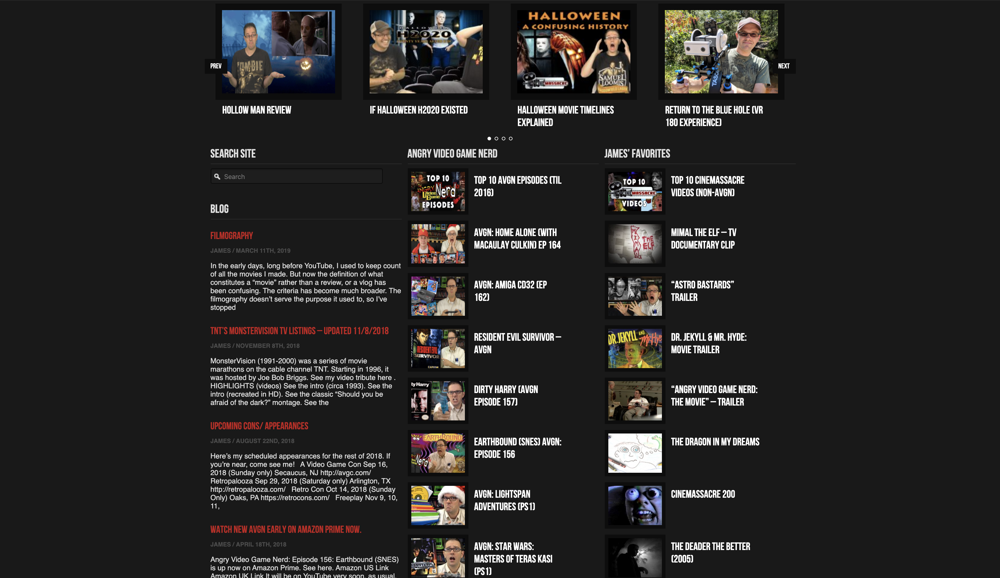

For the completion of Project 2: Responsive Redesign with Front-End Frameworks, I would like to redesign the website for Cinemassacre Productions, an independent film company that specializes in horror, and most other genres, both with original works as well as reviews, retrospectives, and analyses of classics from the past. Though the name would suggest their expertise ends with movies, the people at Cinemassacre are also prominent video/board game reviewers and overall general connoisseurs, who put just as much creativity and care into videos about games as they do with films. I’ve been a fan of this website since about 2009, and since then I don’t think they’ve updated the design of it at all (with the exception of their logo), maybe even since its creation in the early 2000s. The main creator behind this company and their videos/films, James Rolfe, is one of the original pioneers of “YouTube Gaming” which today has become an online entertainment powerhouse, rivaling all other mediums with its popularity and user base. With that kind of pedigree, I’ve always thought that he deserved a more polished site that doesn’t scream 2006 everytime I find myself on it.
With Cinemassacre being the mainstay that it continues to be after so many years, providing film buffs, monster movie lovers, and fellow video game nerds hours of entertainment and a welcoming into a social circle of common interests, the website where most of their content lives, cinemassacre.com, is due a huge overhaul. One of the main issues it has is that it is very ‘archival’ in form, as opposed to being more interactive and dynamic for users.
The homepage isn’t too bad, it serves its purpose by providing you with a video that introduces the site to new visitors, their most recent videos, and an active blog.
However, the same could not be said for each categorical page, which only has a larger window at the top for the most recent video released, and then scrolling down further brings you to the same four columns of square boxes organized to the bottom of the page. Though each box presents itself with nice visuals, all of which are separated evenly and easy to scan through at a glance, I believe it to be difficult to get very far at all down the list when it starts to become a monotonous process of scrolling and looking at the same thing.
With this company producing hundreds, if not thousands of videos/films throughout the years, it is beneficial to have a website that can not only nicely organize all of it, but give users more of a reason to use that site as opposed to immediately going to YouTube because their user interface is more appealing.
The goal of this project is to give Cinemassacre Productions a significant update to the design of their website, one that is appealing enough to warrant a visit simply to enjoy being there and entertained at the same time, as opposed to just sifting through their archives for a few minutes only to leave soon after. The aesthetic of the website as it currently is I believe is already on the right track, so I don’t think it needs too much altering, just a nice visual facelift to fit with modern times. The color scheme especially works because it’s based off of the logo and it matches the content of the site. My main focus will be on making it more visually interesting, better organized, and user friendly.
The primary target audiences are mostly young people who are fans of horror, obscure films, video games, and music (mostly rock and heavy metal). The creator himself, James, says the company started with an “independent, chaotic, and do it yourself” mentality, which I intend to keep alive with its design and presentation. I will also have that theme in mind when targeting these audiences, which largely includes people who love strange, “off the wall” kind of content, the stuff that usually finds itself far away from anything mainstream.
Wednesday April 15th - Sketching, sitemap, wireframe
Wednesday April 22nd - Semantic Structure (just HTML ready)
Wednesday April 29th - Styling (adding CSS as well as any alters to HTML)
Friday May 1st - Final Product